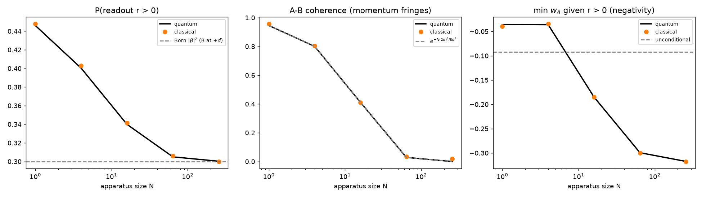

Why big detectors give definite answers
A bigger apparatus gives Born weights and decoherence

0 approaching the Born weight 0.3; A-B coherence decaying as predicted; minimum of A's conditional distribution falling to -1/pi. Classical dots lie on quantum lines." style="width:100%">$N$ pointer modes act as one collective pointer of width $\sigma/\sqrt N$. As $N$ grows, $P(\text{reading})$ approaches the Born weight $|\beta|^2 = 0.3$.
The kick B receives is the uncertainty principle as back-action. A–B coherence dies as $\exp(-N g^2 \Delta x_B^2 / 8\sigma^2)$.
Dots (classical) lie on the lines (quantum). Because everything here is quadratic, that agreement is guaranteed: it checks the construction, not a risky prediction.